英雄传说：闪之轨迹IV·完美攻略·终版（2）
英雄传说：闪之轨迹IV完美攻略·终版
出品：浅闻小鉴攻略组
作者：夏浅线。
文本精校：Mr.Μǎ Lip
第I部
VII班的考验
8月2日
桑格瑞尔迷宫·第一相
★剧情获得尤娜人物信息：决心
剧情后·三人安上核心回路·调整好回路后退出界面·触发剧情
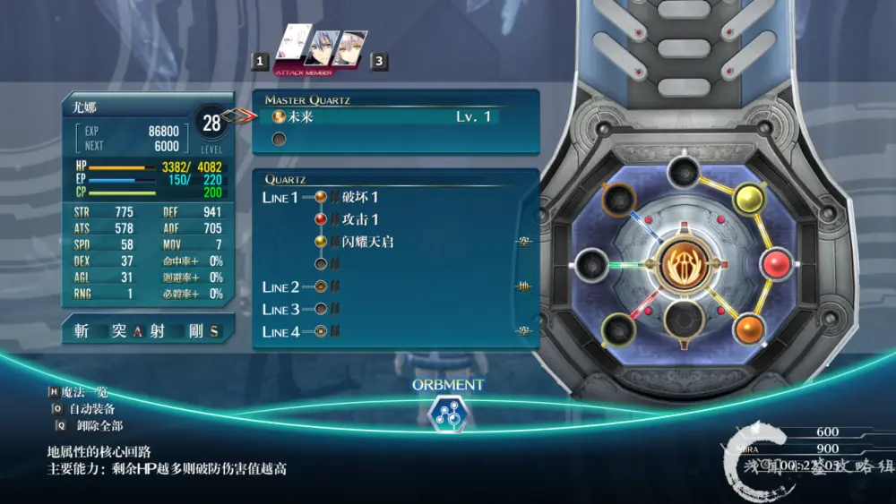
剧情后开始正式攻略桑格瑞尔迷宫·第一相
这里建议用亚尔缇娜当操控人物·因为其在场景内的攻击范围较大·遇敌攻击打晕的概率也大
并且本作也有奇袭招式·会消耗奇袭点·没命中敌人则不消耗奇袭点
命中敌人后会进入战斗·并且会造成敌人50%破防伤害·大家记得合理运用
其中奇袭点可通过打破场景内的道具箱子获得
回复装置：1个
宝箱6个：中回复药/EP填充剂II/圣灵药各1个·银之链（饰品）·七种耀晶片各50个
HP2（回路）·精灵香·替身傀儡（饰品）
本区域新敌人共4个：悲凄者·霉菌水母·蒙面法师·邪尘魔
记得收集情报
注1：后续要求U物质18个·记得凑齐
注2：战斗笔记中·怪物/敌人必须得有绿色对号标识·否则不算是收集
走到红色感叹号处·触发战斗
在遇到石柱的时候可用失衡刚A以上成员打破
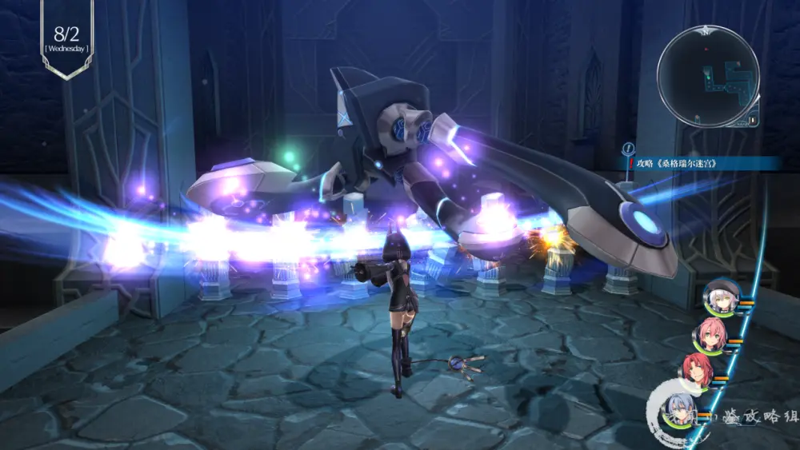
桑格瑞尔迷宫·第一相最深处
回复装置：1个
本区域新敌人共1个：绯之罗赛莉亚
记得收集情报
AP要求：打掉绯之罗赛莉亚50%血量触发绯之罗赛莉亚大招·且大招后全部成员未死亡
8月7日
隐密村里霭灵
★剧情获得兰迪人物信息：斯巴达特训
蓝色星号处可泡温泉
每次获得：HP/EP/BP/奇袭点全恢复·且CP增加200
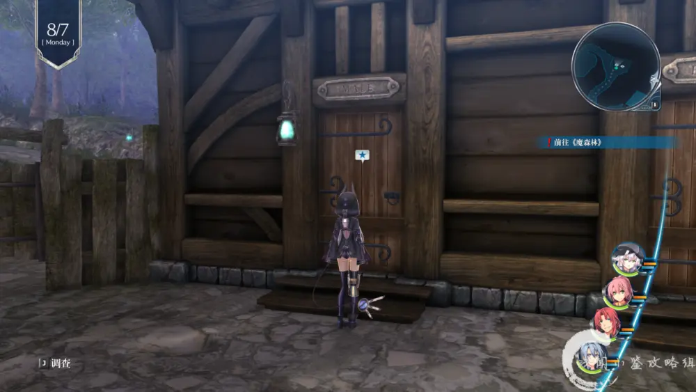
★占卜师家内·希可恩对话·获得：3与9·第1卷
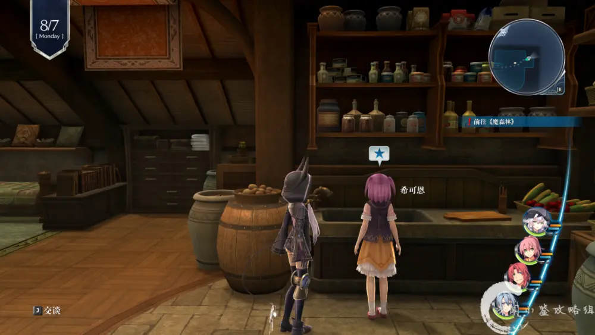
药师家内·魔女澳拉对话·获得：勇气种子
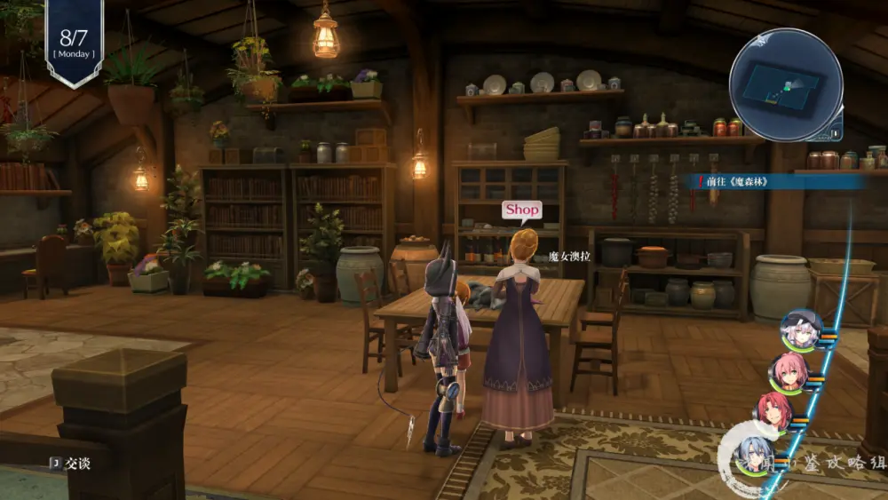
★酒馆《月影亭》内·柜台莱莎对话·解锁料理手册·得到风味马铃薯巧达汤食谱
获得：爽口洋葱/软绵绵马铃薯/粗碎岩盐各3个
料理分为：极品料理·普通料理·稀奇料理·独门料理
制作独门料理需要指定成员在队伍内才可制作
★并且本作需要制作极品料理·独门料理·稀奇料理
风味马铃薯巧达汤：爽口洋葱/软绵绵马铃薯/粗碎岩盐各1个
独门料理：莎拉
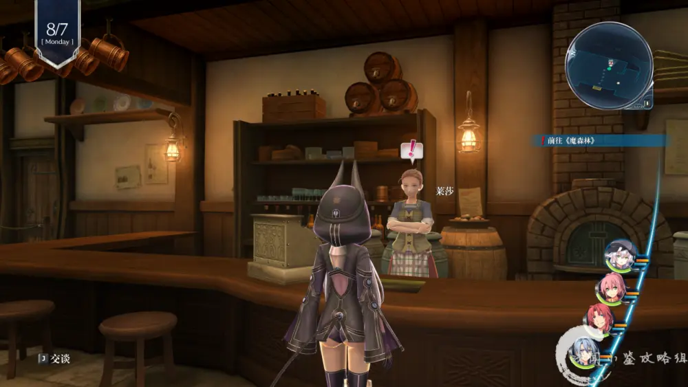
★尤克列斯对话·解锁钓鱼手册
获得：钓饵5个·改装式钓竿
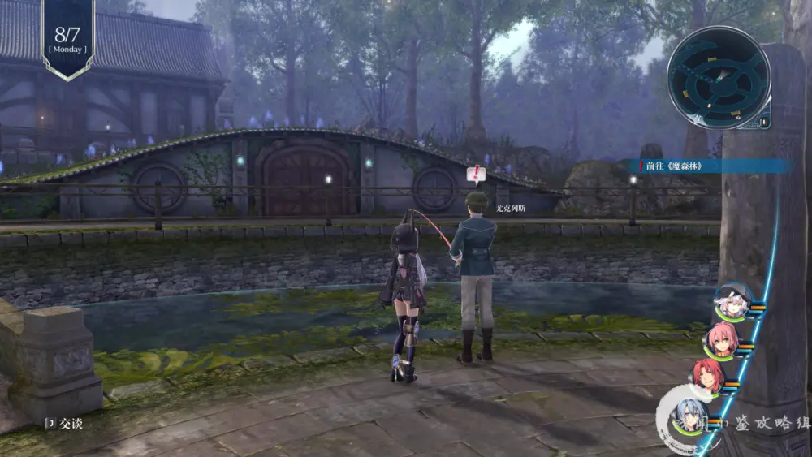
隐密村里霭灵的池塘钓鱼点：银伞鱼·寄生鲶·雪花蟹·鲤鱼
注1：关于后续钓鱼点说明
本攻略为收集向攻略·如未提及·均为无新品种鱼
注2：关于攻略中出现了某种鱼·但是自己没有钓到
只要是攻略中写到的鱼·都是小浅钓到的·所以希望大家本着负责任的态度不要污蔑攻略
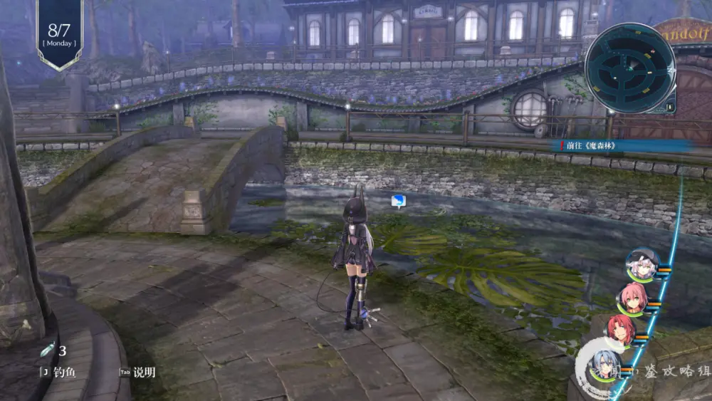
★杂货店《雷姆利克》内·掌柜欧罗伊老先生可买：帝国时报·第2号
钓鱼种类达到四种·掌柜欧罗伊老先生处可获得：辅助钩
并且欧罗伊老先生处可买/可处理鱼类相关道具
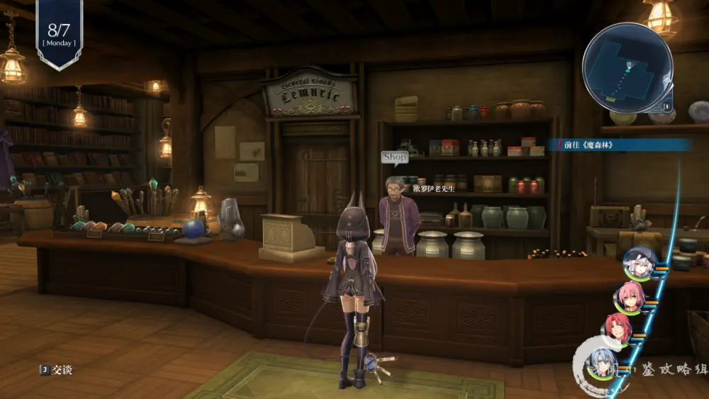
炼成工房《甘度夫》内·掌柜甘度夫对话·获得：情报解析R（回路）·七种耀晶片各60个
并且开启ARCUSII强化结晶孔·强化结晶孔可安高阶回路
LV1可安R结晶回路·LV2可安SR结晶回路·并且强化结晶孔也会提高EP上限
除结晶孔强化外也可改造武器和回路
改造武器和回路是用相应的武器和回路+U物质·在工房进行强化
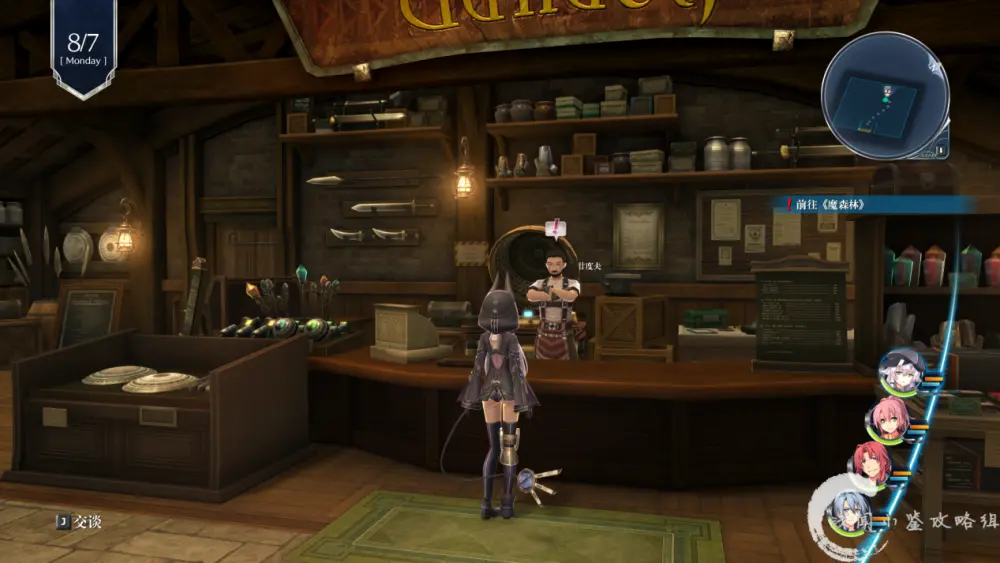
全部结束后·可准备一些防即死状态的饰品·存档·走到红色感叹号处·触发剧情
剧情后·调查转移石·转移至【魔森林】
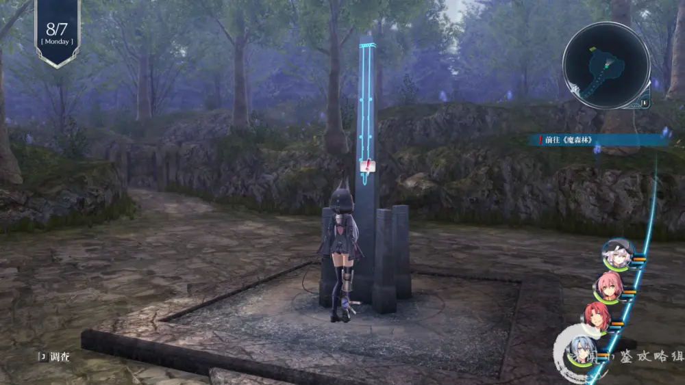
魔森林
走到下图位置
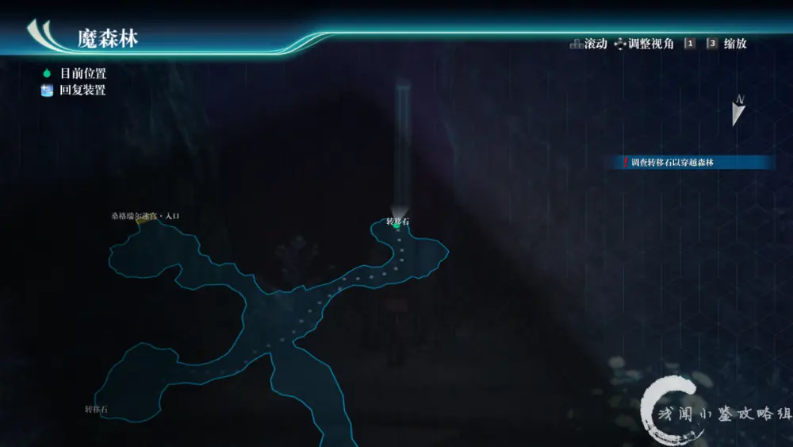
调查转移石·转移至【魔森林·南边】
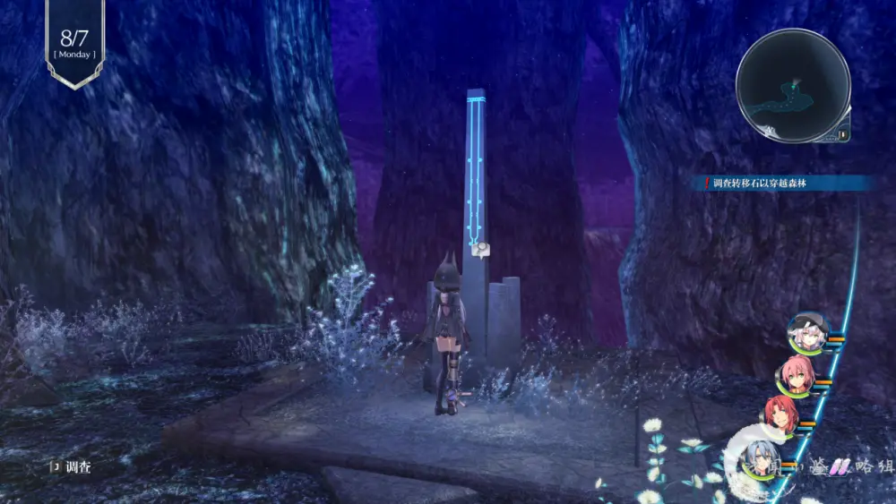
魔森林·南
宝箱4个：闪耀眼镜（饰品）·力量药水/守护药水/心灵药水各1个·七种耀晶片各50个
心灵之霞R（回路）
本区域新敌人共5个：燐光蝶·叶蛙·恶魔花·神秘报丧女妖·白银獠牙
记得收集情报
走到红色感叹号处·触发剧情
走到转移石处·触发剧情·存档·转移至伊斯米亚大森林
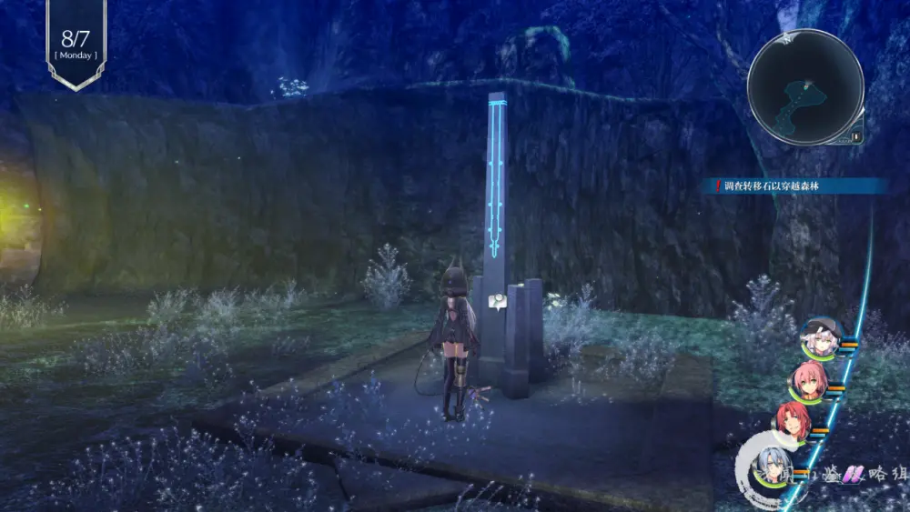
伊斯米亚大森林
高级回复装置：2个
宝箱4个：原力印记（饰品）·新鲜的蛋·鲜奶·熟成奶酪各5个·U物质5个·治愈术R（回路）
本区域新敌人共3个：玳蒂蛾
支线怪：大眼妖·巨型邪眼魔
记得收集情报
走到红色感叹号处·触发剧情·接到支线
支线
伊斯米亚大森林的通缉魔兽
①8月7日·伊斯米亚大森林·触发剧情后·接到此任务
走到红色圆圈处·存档！！！·前走·触发战斗
BOSS：巨型邪眼魔
怪弱地/空
记得收集情报
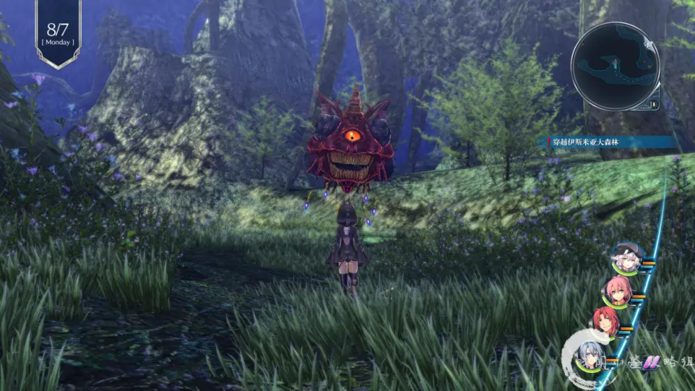
获得奖励：黄棕发·兰迪·2000米拉
获得AP：3
支线完成
西沙萨兰特街道
宝箱3个：中回复药/EP填充剂II/圣灵药各1个·绿色坠饰（饰品）·七种耀晶片各50个
本区域新敌人共3个：毒蝇伞可爱猿·獾狸·睡神蛙
记得收集情报
圣特亚克
住宅区
剧情后·公寓《月冠》内二楼·圣特亚克·旧游击士协会据点内·床可休息
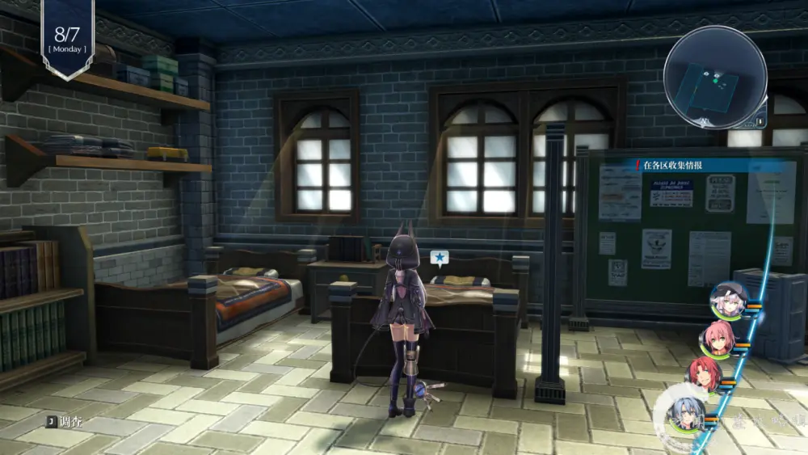
★《钱伯工房》内·掌柜钱伯可买：核心回路<永恒>
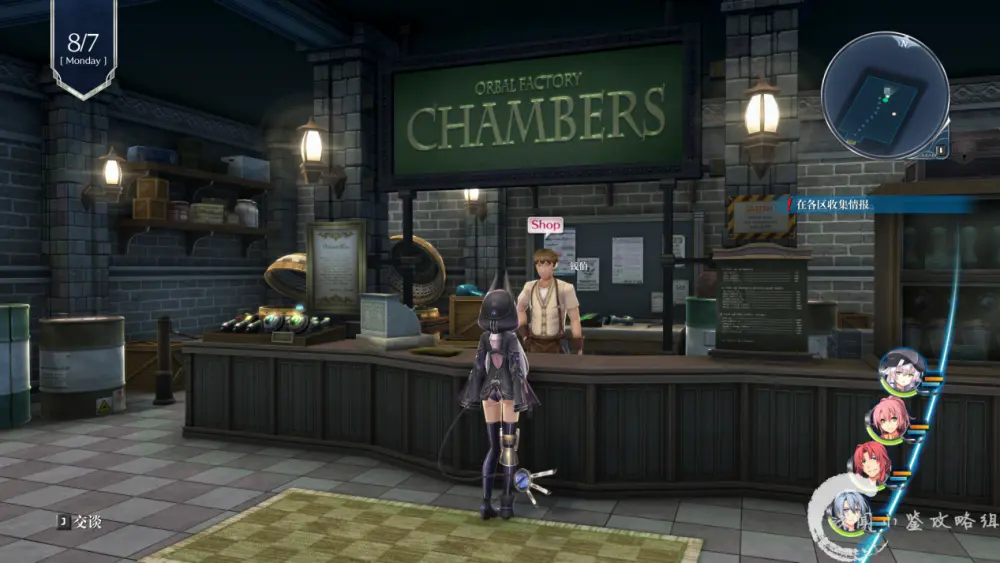
交换·古董《狄蜜特》内·柜台路弗尔可换月镜（回路）
月镜（回路）：情报解析R（回路）·U物质18个
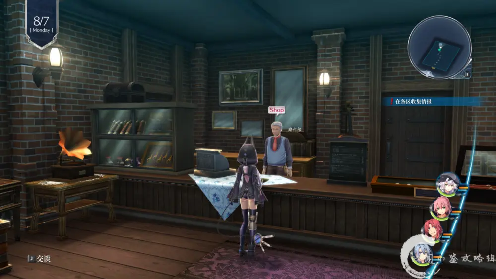
咖啡·住宿《槐月》内·触发剧情
柜台奈许可买：推荐料理「熏风千层酥」·并且获得其食谱
熏风千层酥：鲜奶/星形莓果/蜂蜜糖浆/魔兽粉末各1个
独门料理：亚尔缇娜
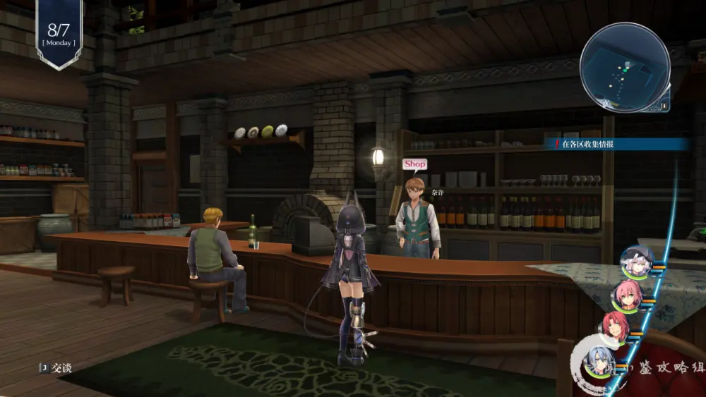
贵族街
走到红色感叹号处·触发剧情
教堂广场
圣特亚克大教堂内·触发剧情
百货《阿尔比昂庭院》
一楼
时装《薛尔丹》柜台亚兰可买：金发·尤娜·薄荷绿发·库尔特·金发·亚尔缇娜
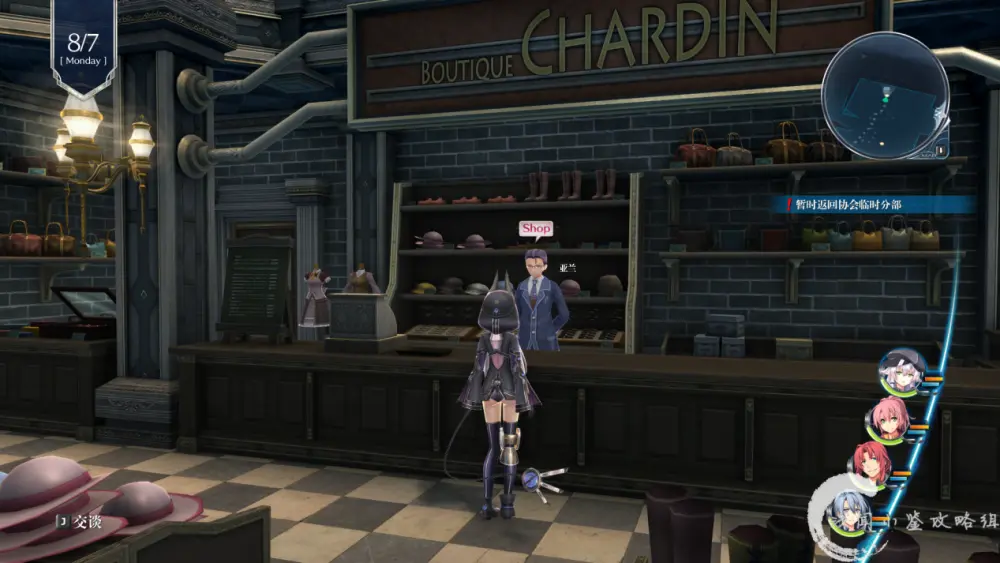
二楼
★旧书·杂货《艾努尔书局》柜台法兰奇丝卡可买：传说中的天选之人·上卷
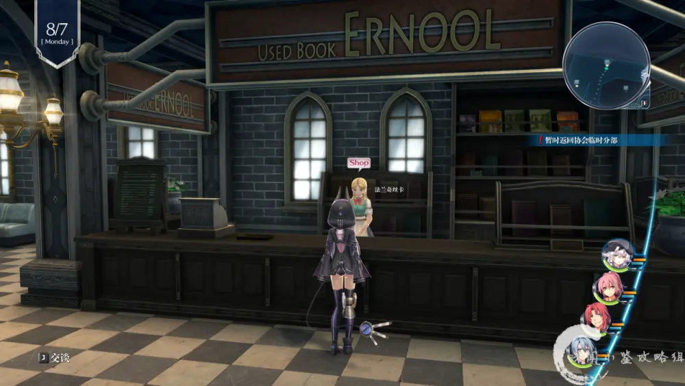
住宅区
回到公寓《月冠》内二楼·圣特亚克·旧游击士协会据点·存档·调查门·触发剧情
★剧情解锁凯利人物
北沙萨兰特街道①
走到绿色星号处·触发剧情
南沙萨兰特街道①
宝箱4个：新鲜香草/爽口洋葱/软绵绵马铃薯各5个·火之失R（回路）·生命之息R（回路）U物质5个
本区域新敌人共4个：波波·弹跳吸血虫·赤面松鼠·硬壳犀兽
记得收集情报
EXTRA新敌人共1个：黄金波波（随硬壳犀兽战斗中出现）
记得收集情报
南沙萨兰特街道①钓鱼点：红鲈·雪花蟹·鲤鱼·寄生鲶
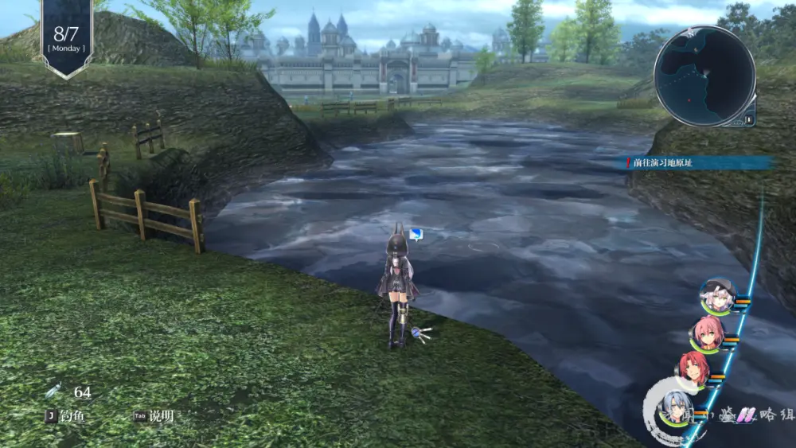
触发剧情后·存档！！！
南沙萨兰特街道·旧演习地
本区域新敌人共1个：魔煌兵优乡种
怪弱火/幻
记得收集情报
触发剧情·战斗
南沙萨兰特街道②
宝箱3个：大地治愈R（回路）·蓝色坠饰（饰品）·七种耀晶片各50个
本区域新敌人共2个：细羽鸟·新种螳螂
记得收集情报
考验箱1：尤娜/库尔特
BOSS：肥胖波姆
怪弱风/时/火
记得收集情报
走到红色感叹号处·触发剧情
纺织市镇帕尔姆
★酒馆《白色小路亭》内·柜台贝尔特朗可买：白色小路可乐饼（后续需要）
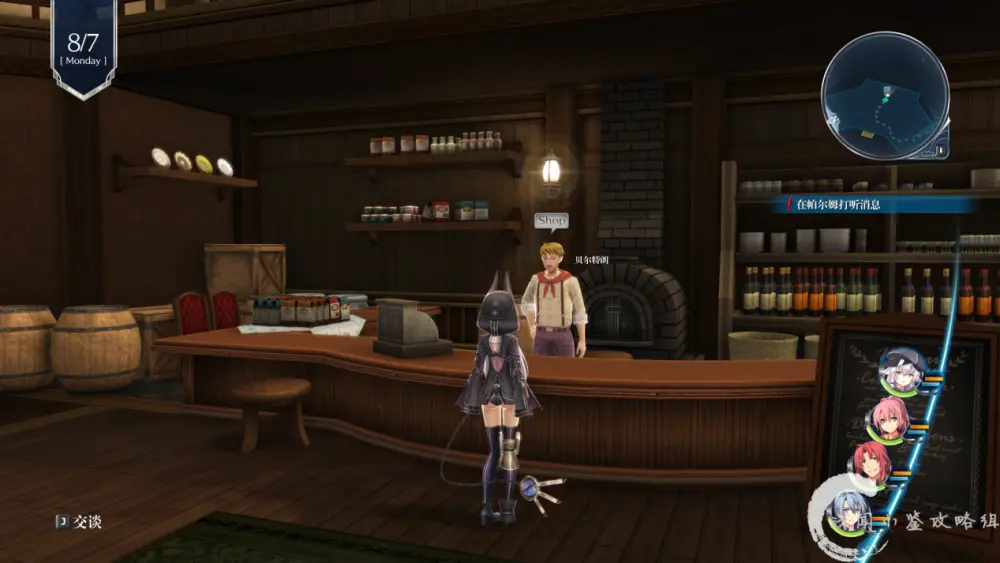
二楼房间内·雷克罗德II世对话·获得：3与9·第2卷
雷克罗德II世处可买/可处理鱼类相关道具
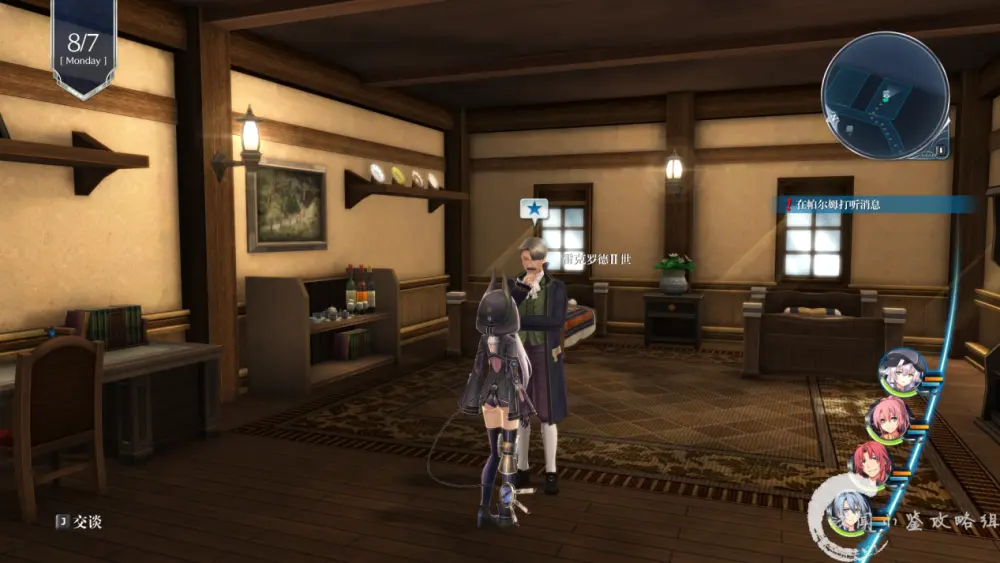
支线
收集替代药材
①8月7日·帕尔姆礼拜堂内·霍宾兹教区长对话·接到此任务
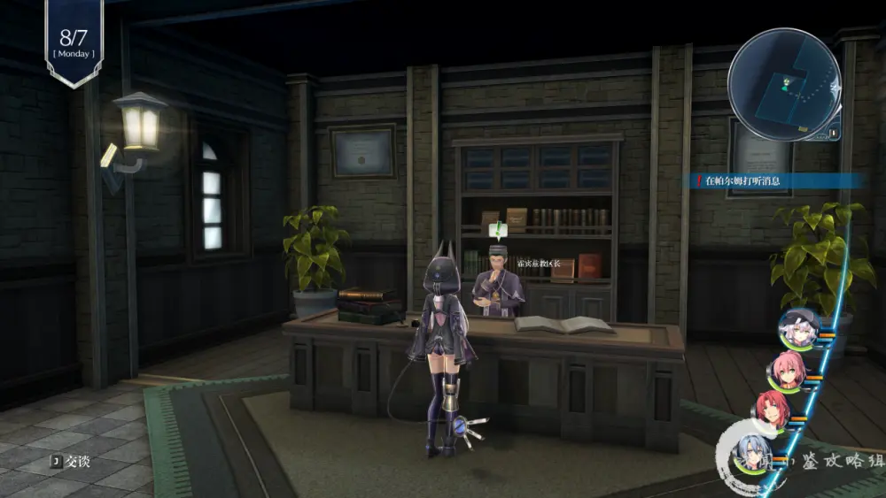
②快速移动到圣特亚克·教堂广场·圣特亚克大教堂·兰森大主教对话
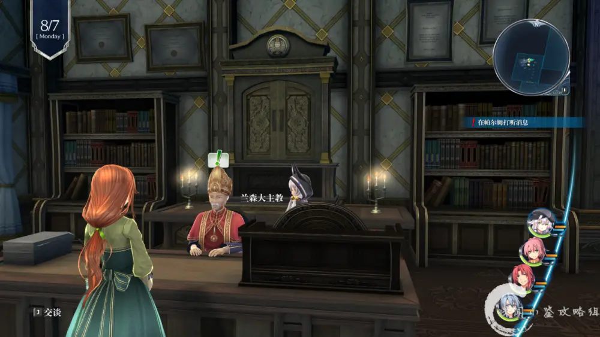
百货《阿尔比昂庭院》内一楼·高级食材《史特利农场》·柜台罗丝米对话
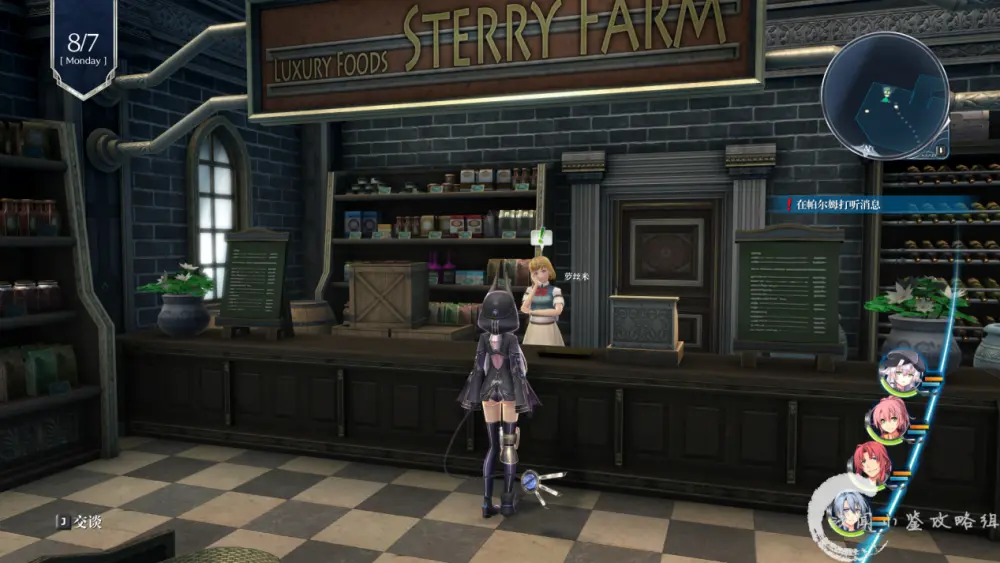
③快速移动到西沙萨兰特街道·走到绿色感叹号处·调查
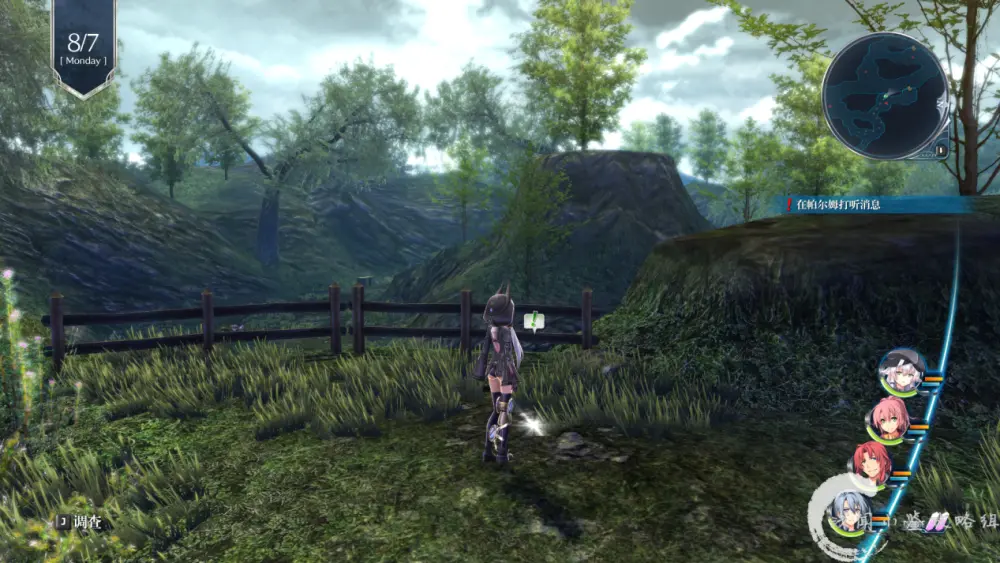
④快速移动到纺织市镇帕尔姆·帕尔姆礼拜堂·霍宾兹教区长对话
获得奖励：中回复药3个·治愈（回路）·2000米拉
获得AP：4
获得：托尔兹复兴值4点·累积4点
支线完成
全部结束后·可准备一些防石化/昏厥状态的饰品
★走到红色感叹号处·范德尔流·练武场前·触发剧情·解锁雷克斯人物
★走到红色感叹号处·触发剧情·解锁帕布罗人物
★对帕布罗按左下角对应挑战键开始挑战VM卡牌游戏
胜利后·可再次对帕布罗按左下角对应挑战键开始挑战VM卡牌游戏·并解锁HARD难度
胜利后·获得：U物质2个
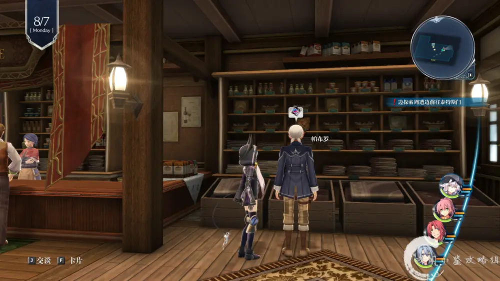
阿格里亚旧道
宝箱5个：风之轮R（回路）·毒之刃（回路）·冰凉皮带（饰品）·七种耀晶片各50个
星形莓果/苦番茄/蜂蜜糖浆各5个
本区域新敌人共5个：护蛋蛇·啃咬狼·皇帝雀·刺青蛇·罪枭
记得收集情报
阿格里亚旧道钓鱼点：虎龙鱼·雪花蟹·寄生鲶·鲤鱼
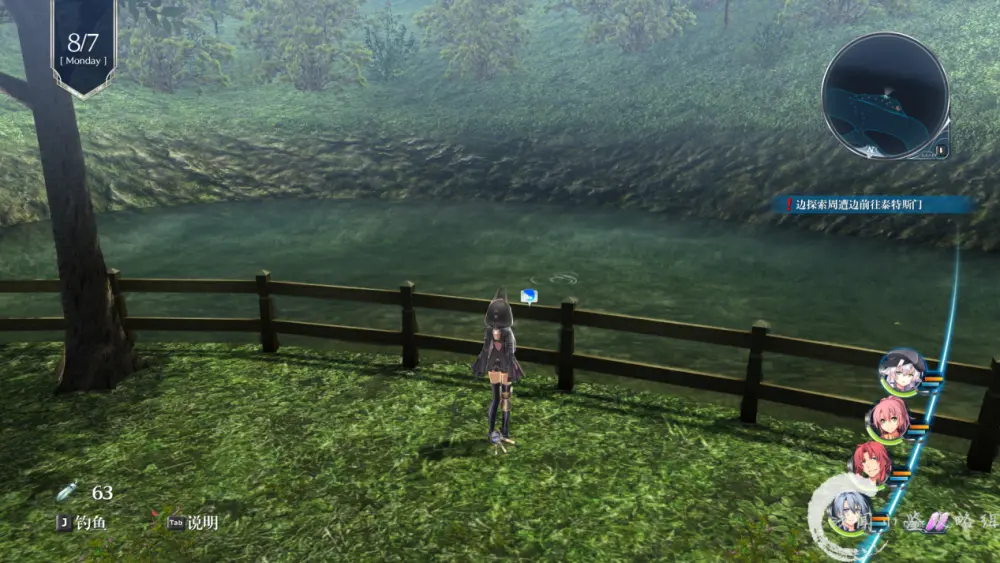
走到绿色感叹号处·触发剧情
龙灵窟
回复装置：2个
机关：2个
宝箱5个：核心回路<英杰>·U物质5个·轻飘飘手巾（饰品）·七种耀晶片各50个
天劫之箭R（回路）
本区域新敌人共4个：金刚裸海蝶·蜥人族·剑·蜥人族·杖·石化希杜拉
记得收集情报
支线
攻略龙灵窟
①进入龙灵窟后·触发剧情·接到此任务
支线暂停
龙灵窟·祭坛
本区域新敌人共1个：岩石领主
怪弱风/地/空
记得收集情报
支线
攻略龙灵窟
②消灭龙灵窟·祭坛内岩石领主
获得奖励：2000米拉
获得AP：4
获得：托尔兹复兴值4点·累积8点
支线完成
帕尔姆间道①
宝箱4个：U物质5个·水之失R（回路）·中回复药/EP填充剂II/圣灵药各1个
七种耀晶片各50个
本区域新敌人共4个：胡蜂·森林蚊·巨魔田鳖·胡蜂女王
记得收集情报
考验箱2：亚尔缇娜/尤娜
BOSS：巨型蜚蠊
怪弱风/幻/地
记得收集情报
帕尔姆间道②
宝箱5个：·神圣圆球（饰品）·力量药水/守护药水/心灵药水各1个·痊愈之药/S-药片各3个
粗碎岩盐/千万五谷/百药精酒各5个·金耀天球R（回路）
本区域新敌人共2个：末日纺织者·鬼霸勾蜓
记得收集情报
泰特斯门
★蓝色星号处·拍照点①
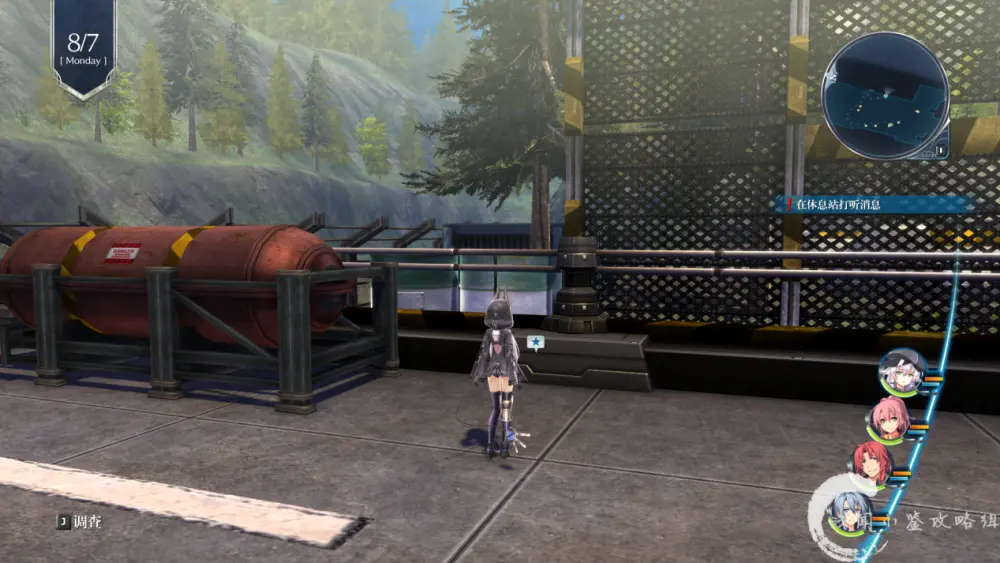
阿尔贝尔对话·可借马
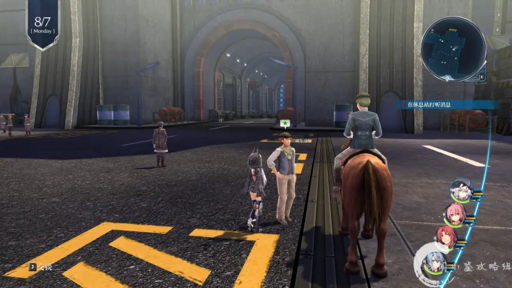
休息站内·触发剧情
★柜台萝咪可买：推荐料理「浓郁起司焗饭」·并且获得其食谱
浓郁起司焗饭：新鲜的蛋/熟成奶酪/千万五谷/魔兽油脂各1个
独门料理：兰迪
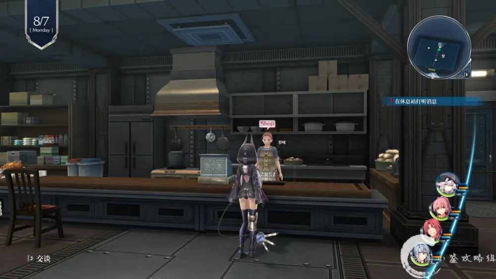
★安敦对话·触发剧情·解锁玛格丽特人物
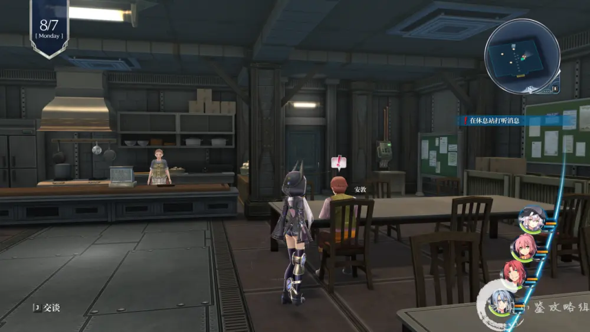
★休息站内·玛格丽特对话·可交付稀奇料理
交付三种稀奇料理·获得：生命露水/U物质各2个
获得：托尔兹复兴值2点·累积10点
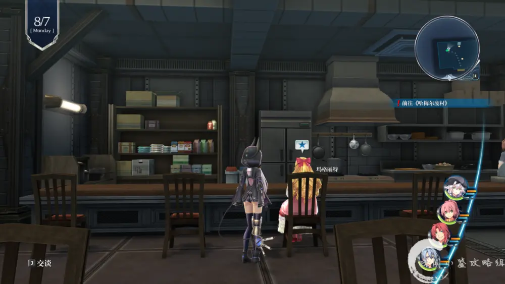
帕尔姆间道①
存档·走到红色感叹号处·触发剧情
哈梅尔废道①
高级回复装置：1个
宝箱5个：妨碍1（回路）·勇气种子·橙色斗篷（饰品）·精灵香·神圣之力R（回路）
本区域新敌人共4个：哈梅尔巨猿·炸弹草·食人植物·触手布罗布
记得收集情报
哈梅尔废道②前存档！！！·过图·触发剧情·战斗
哈梅尔废道②
高级回复装置：1个
宝箱4个：修复石/激发石/勇气石/苏生石各1个·七种耀晶片各50个·斗志激昂R（回路）
还魂粉
本区域新敌人共2个：食人植物王·蜗兽王
记得收集情报
★剧情解锁塔琪安娜人物
在哈梅尔废村前存档！！！·过图·触发剧情
哈梅尔废村
亚修对话·触发剧情·战斗
本区域新敌人共7个：基尔巴特·利刃狮犬·强化猎兵（剑）·强化猎兵（枪）
猎兵王路嘉·陷阱师杰诺·破坏兽雷欧尼达斯
记得收集情报
注：第一场战斗结束前最好全员CP200满值
第二场战斗
AP要求：35回合内·将全部敌人的HP打掉50%
第三场战斗·骑神战
要求：将紫之骑神赛克托的HP打掉50%
正常状态下：身体
武器前指驱动状态下：头部
武器在身后驱动状态下：手臂
结算清单：第I部小结算①
第I部·小结算①·总AP：27
升级学生阶级：乙伍级·获得：辉星纹章（饰品）·炼气（回路）
托尔兹总复兴值：10点
<罗赛战中所有人生还>——AP3
打掉绯之罗赛莉亚50%血量触发绯之罗赛莉亚大招·且大招后全部成员未死亡·获得AP：3
<将路嘉逼至绝境>——AP3·35回合内·将全部敌人的HP打掉50%·获得AP：3
<将杰诺逼至绝境>——AP1·35回合内·将全部敌人的HP打掉50%·获得AP：1
<将雷欧尼达斯逼至绝境>——AP1·35回合内·将全部敌人的HP打掉50%·获得AP：1
<发现特异点>——AP8
伊斯米亚大森林的通缉魔兽——AP3
收集替代药材——AP4
攻略龙灵窟——AP4
8月9日·休息日
罗赛的工作室
★剧情获得亚修人物信息：了断
一楼
★东侧房间内·对艾略特按左下角对应挑战键开始挑战VM卡牌游戏
胜利后·可再次对艾略特按左下角对应挑战键开始挑战VM卡牌游戏·并解锁HARD难度
胜利后·获得：U物质2个
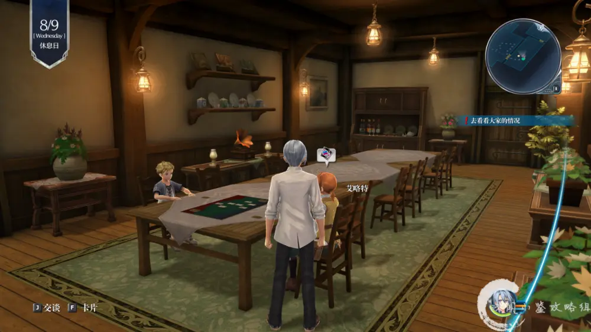
隐密村里霭灵
支线
月影亭的魔女汤
①8月9日·酒馆《月影亭》内·柜台莱莎对话·接到此任务
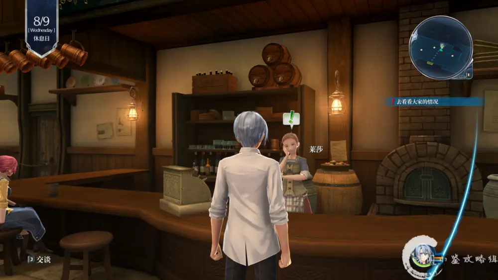
支线暂停
和地图内的红色感叹号处的人物·全部对话
★杂货店《雷姆利克》内·金格对话·触发剧情·解锁金格人物
并且获得金格人物信息：霭灵分店
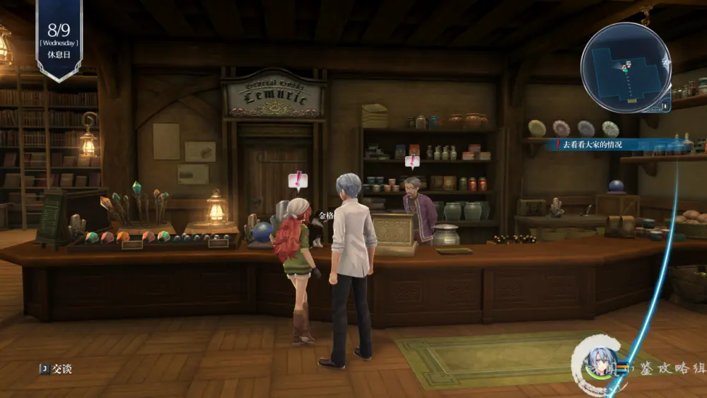
掌柜欧罗伊老先生可买：黑发·库尔特·橘发·亚修·以及部分VM卡牌
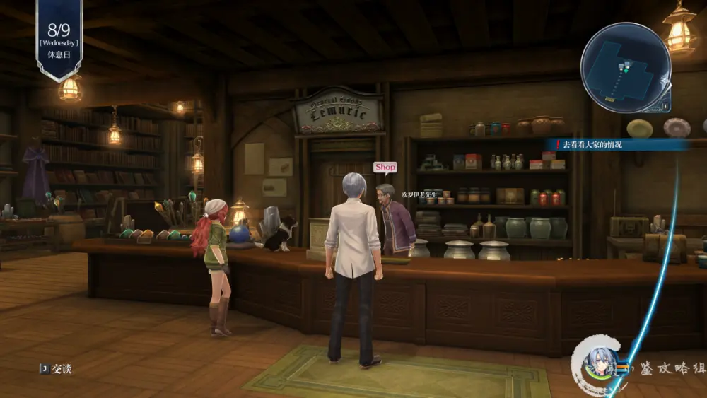
炼成工房《甘度夫》内·柜台甘度夫可给机甲兵制作和安装EX宝石
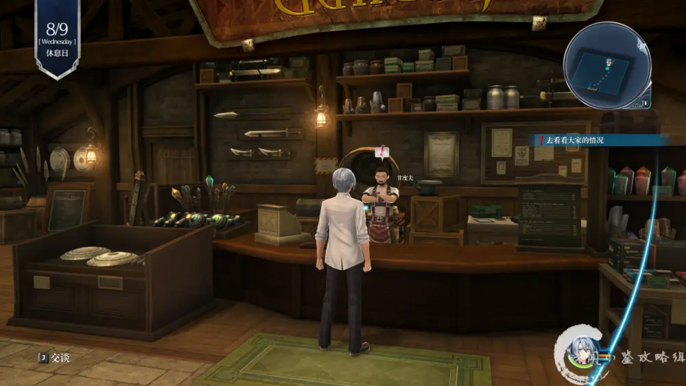
调查转移石·转移至【魔森林】·触发剧情
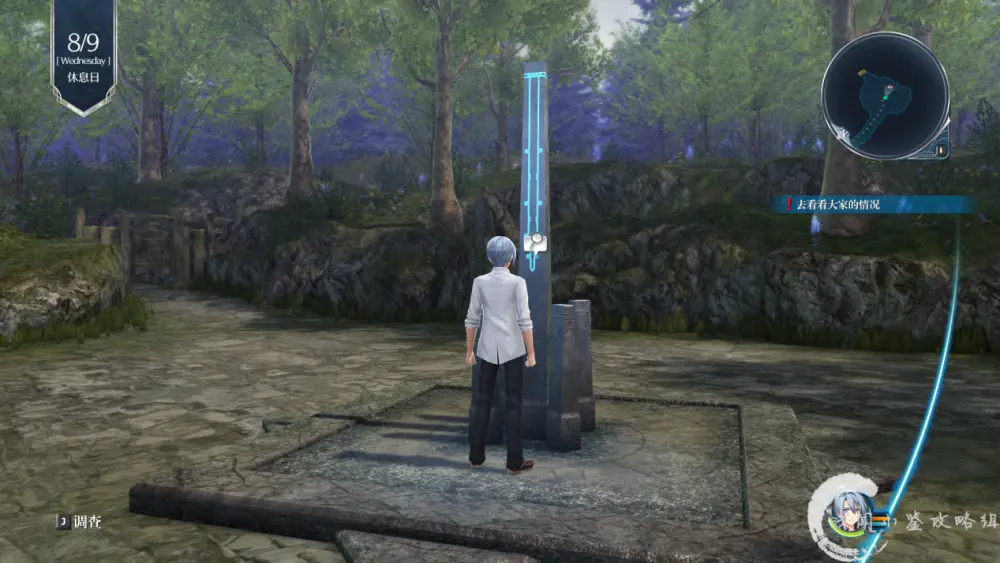
魔森林
大家记得给现有料理都做出极品料理·独门料理·稀奇料理·已交付的就不用做了
快速移动到桑格瑞尔迷宫·入口
桑格瑞尔迷宫·入口
入口前的装置可切换迷宫相数
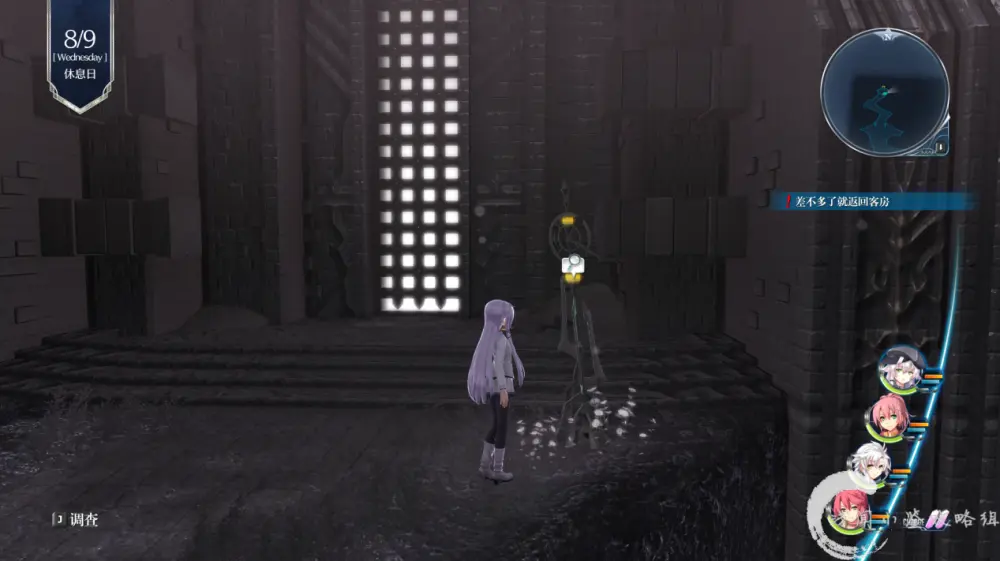
桑格瑞尔迷宫·第二相
回复装置：1个
宝箱6个：U物质5个·力量药水/守护药水/心灵药水各1个·黄色坠饰（饰品）
痊愈之药/S-药片各5个·七种耀晶片各50个·魔导祝福R（回路）
本区域新敌人共3个：噬光血鱼·挥刀人像·吸血蝙蝠
记得收集情报
支线
月影亭的魔女汤
②打败噬光血鱼·概率得到曼德拉草
支线暂停
桑格瑞尔迷宫·第二相最深处
回复装置：1个
本区域新敌人共1个：石像鬼
怪弱火/幻/风
记得收集情报
获得奖励：黄棕发·库尔特
快速移动到第二相·入口·退出桑格瑞尔迷宫
隐密村里霭灵
支线
月影亭的魔女汤
③回到酒馆《月影亭》内·柜台莱莎对话·交付曼德拉草
获得奖励：莱莎可做魔法料理·真心（回路）·2500米拉
获得AP：4
获得：托尔兹复兴值4点·累积14点
支线完成
★ARCUSII报告战斗笔记·当前总情报登记数为57
获得：力量露水/守护露水各2个
获得：托尔兹复兴值5点·累积19点
★ARCUSII报告书籍笔记
获得：生命露水2个
获得：托尔兹复兴值5点·累积24点
★ARCUSII报告风景照
获得：印刷照片①爱丽榭
获得：托尔兹复兴值2点·累积26点
全部结束后·回到罗赛的工作室内二楼·自己的房间前·存档·调查门·休息
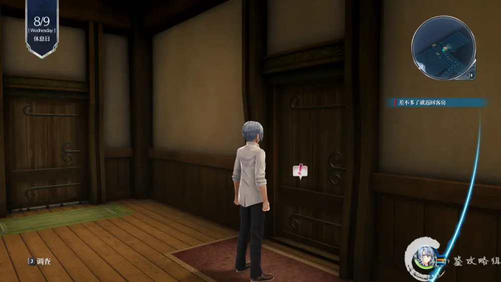
结算清单：第I部小结算②
第I部小结算②·总AP：31
托尔兹总复兴值：26点
<罗赛战中所有人生还>——AP3
打掉绯之罗赛莉亚50%血量触发绯之罗赛莉亚大招·且大招后全部成员未死亡·获得AP：3
<将路嘉逼至绝境>——AP3·35回合内·将全部敌人的HP打掉50%·获得AP：1
<将杰诺逼至绝境>——AP1·35回合内·将全部敌人的HP打掉50%·获得AP：1
<将雷欧尼达斯逼至绝境>——AP1·35回合内·将全部敌人的HP打掉50%·获得AP：1
<发现特异点>——AP8
伊斯米亚大森林的通缉魔兽——AP3
收集替代药材——AP4
攻略龙灵窟——AP4
月影亭的魔女汤——AP4

随便聊聊：
闪之轨迹IV·完美攻略·终版·正式连载
希望各位会喜欢
如果大家觉得攻略写的还可以 欢迎大家充电支持我们
您的每一次充电 是对攻略组的支持和鞭策
也是对我们作品的认可 以及继续做下去的动力！
小浅在这里先拜谢各位老爷小姐（鞠躬
另外攻略连载完结后·群内将提供付费攻略的Pdf版下载
欢迎各位催更
Q群：907289369
等待各位来撩